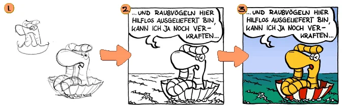
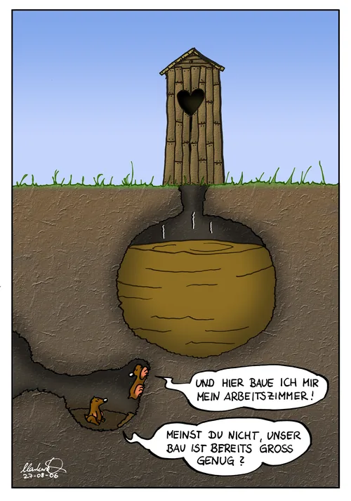
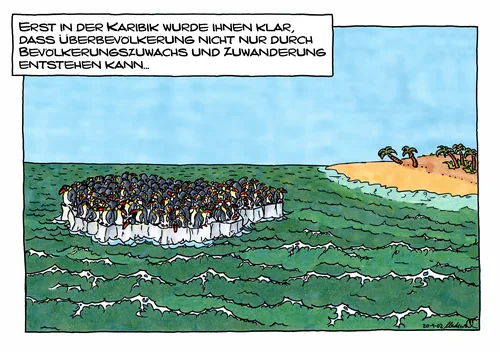

cartoons.de
cartoons.deComic-Tutorial: eigene Comics selber zeichnen
Hallo, ihr Comic-Interessierten! Auf dieser Seite habe ich zusammengestellt, welche Schritte nötig sind, um einen Comic selbst zu zeichnen. Ob ihr es aus reinem Interesse lest oder ob es euch Anregungen gibt, selbst einen Comic zu zeichnen: Viel Spaß dabei!
Das Beispielbild unten stammt aus einem Strip von Rolli, dem Regenwurm. Ein ausführliches Beispiel mit Hintergrund, Figuren, Schatten und Nebel zeigt das Star-Wars-Tutorial.
Im Groben gibt es beim Erstellen eines Comics diese Schritte:
- Eine Idee entwickeln
- Die Figuren skizzieren und zeichnen
- Den Comic tuschen
- Den Comic kolorieren
- Alles zusammensetzen und Effekte einarbeiten

Die Idee
Als Erstes muss natürlich eine Idee her. Ohne Idee kein Comic. Ich möchte meist etwas Bestimmtes zeichnen und überlege nur, in welchen Kontext ich es bringen kann, damit daraus ein Comic wird. Manchmal erlebe ich auch etwas Interessantes, aus dem ich eine Idee zu einem Cartoon oder Comic forme.
Bei einer längeren Geschichte überlege ich mir zuerst die Schlusspointe und anschließend, wie ich die Handlung dazwischen gestalte. Dabei ist zu beachten, dass sich die Schlusspointe möglichst auch auf den Anfang der Geschichte beziehen sollte, denn so wird die Geschichte in sich geschlossen. Die einzelnen Gags sollten immer am Ende einer Seite kommen, damit sie nicht durch das Umblättern unterbrochen werden. Bei einem kurzen Comicstrip wie den Rolli-Strips ist das alles nicht nötig, denn sie bestehen meist nur aus drei Bildern.
Wenn die Idee steht, skizziere ich sie kurz, damit sie nicht verloren geht. Eine solche Ideenskizze zeige ich im Star-Wars-Tutorial. In meinem Unterbewusstsein trage ich die Idee dann mit mir herum und verfeinere sie langsam, bis ich mich hinsetze und anfange, den Comic zu zeichnen.
Die Zeichnung
Auf geht’s: Die interessanteste Aufgabe steht jetzt an – das Zeichnen! Die Figuren und Hintergründe müssen alle gezeichnet werden. Sind die Figuren neu, fallen oft viele Skizzen an, bevor das Design der Charaktere endgültig feststeht. Zum Skizzieren reicht ein einfacher, möglichst weicher Bleistift (etwa HB).
Wenn Tiere meine Hauptfiguren sind, schlage ich meist ein Tierbuch auf und zeichne die Tiere erst einmal ab. So erkenne ich die Besonderheiten, an denen man dieses Tier wiedererkennt. Diese Merkmale muss ich dann auch in meine Zeichnung einbringen, damit jeder das Tier erkennt (mehr oder weniger schwierig, je nachdem, wie abstrakt die Comicfigur nachher aussehen soll).
Jetzt wird es etwas nostalgisch, denn hier geht es um die Entstehung der Rolli-Cartoons. Inzwischen zeichne ich entweder analog mit einem Blaustift vor und tusche dann direkt auf dem Papier. Das fertige Bild wird eingescannt und am Computer weiter bearbeitet, bei Bedarf auch ausgedruckt und analog koloriert. Oder ich koloriere gleich am Computer. Und wer sein Hobby zum Beruf gemacht hat, besitzt sicher auch ein Zeichentablett oder ein Grafiktablett mit Display und arbeitet nur noch digital. Jetzt aber zu meinem altmodischen Vorgehen:
Aus den fertigen Skizzen (Bild 1), die meist noch etwas detailarm sind, entstehen die endgültigen Zeichnungen: Ich ziehe sie mit einem Fineliner (Pigmenttusche) oder mit Feder und Tinte auf dünnem Papier oder Pauspapier nach (Bild 2). Tusche verläuft auf normalem Papier und franst aus; deshalb nehme ich bei Tuschezeichnungen immer Transparentpapier. Auch in dieser Phase tusche ich die Figuren teilweise mehrfach, um unterschiedliche Varianten auszuprobieren. Die groben Linien und Umrisse tusche ich meist mit einer Feder (das sieht dynamischer aus), für Gesichter und feine Linien greife ich dann zu den Stiften.
Man kann die Zeichnungen (Figuren und Hintergründe) in dieser Phase entweder getrennt zeichnen oder gleich ein komplettes Panel. Wer seinen Comic später am Computer nachbearbeitet, wird das Getrenntzeichnen bevorzugen; herkömmliche Comics zeichnet man besser gleich als fertige Panels. Der Vorteil getrennter Zeichnungen: Eine einzelne misslungene Zeichnung lässt sich schneller verwerfen, ohne dass der Rest ebenfalls neu entstehen muss. Außerdem können die Figuren im Panel noch einfach skaliert und positioniert werden, und der Hintergrund lässt sich auch in anderen Panels verwenden.
Wurde Pauspapier verwendet, kopiere ich die Zeichnung im Copyshop auf normales Papier. Das kann ich anschließend kolorieren oder einscannen.
Die Kolorierung
Am einfachsten lässt sich ein Comic auf dem Papier kolorieren. Dafür eignen sich Copic-Marker gut, aber auch Aquarell- oder Acrylfarben liefern gute Ergebnisse und geben dem Comic einen anderen Look. Am Computer ist das Kolorieren am schwierigsten, dafür bietet er die meisten Möglichkeiten der Nachbearbeitung. Ein Beispiel für die Kolorierung am Computer, vom eingescannten Hintergrund bis zu Schatten und Nebel, zeigt das Star-Wars-Tutorial.
Kolorieren mit Copic-Markern
Copic-Marker haben zwei Seiten: eine feine und eine dicke Spitze. Sie ähneln normalen Malstiften, die Farben bleiben aber länger flüssig, sodass sie gut ineinander verlaufen. Man kann sie auch mehrfach auftragen, um verschiedene Farben zu mischen. Das sieht aber leider nicht so gut aus, als wenn man den Farbton direkt verwendet. Man braucht also schon ein großes Sortiment von mindestens 30 Markern, Profis mindestens 100. Bei einem Preis von rund 5 Euro pro Stift (im Set) ist das schon ein kleines Vermögen. Sparsame Zeichner benutzen wenige Farben und ändern diese später am Computer.
Beispiele für unterschiedliche Kolorierung

")

Zusammensetzen und Effekte
Dieser Schritt ist nur nötig, wenn die Zeichnungen getrennt angefertigt wurden und noch in einem Panel zusammengefasst werden müssen. Am Computer lassen sich die einzelnen Bilder gut zurechtschieben. Hat man das Panel schon komplett gezeichnet, hat man das Pauspapier beim Durchzeichnen der einzelnen Elemente bereits immer in die richtige Lage gerückt, um die Figuren gut im Bild zu platzieren.
Die Figuren müssen natürlich genauso koloriert werden wie der Hintergrund. Hat man sich entschieden, den Comic am Computer zu kolorieren, kann man außerdem verschiedene weitere Ebenen in das Bild einfügen, zum Beispiel Nebel oder die Schatten der Figuren.
Fertig
Wenn alle Panels fertig koloriert und zusammengesetzt sind, ist auch der Comic fertig. Hier seht ihr den Rolli-Strip aus dem Beispielbild oben in voller Größe:

Mehr Strips dieser Art findet ihr im Rolli-Archiv, und wie meine Star-Wars-Comics entstehen, steht im Star-Wars-Tutorial.
Nun aber viel Spaß beim Zeichnen eurer eigenen Comics! Ich würde mich freuen, wenn ich euch zum Comiczeichnen angeregt habe. In dem Fall könnt ihr eure Werke bei toonsUp, der Comic-Community, ausstellen.
← Zurück zu Rolli, dem Regenwurm